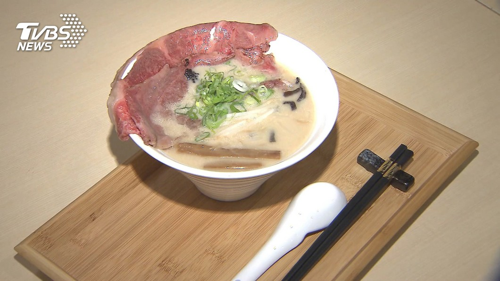

下酒又開胃的居酒屋料理，在拉麵店也吃的到！連鎖拉麵店最近把總店改裝，
新增24道如「橫膈膜排、醃漬番茄」等居酒屋菜色，擴大消費族群。
另家拉麵業者則是把和牛、魚子醬兩道「超頂級」食材，放到拉麵裡面，
搶攻頂端客。2大片比臉還大的宮崎A5和牛，把邊邊微微炙燒，逼出油脂、香氣，
愛吃牛的看了超罪惡，外加這匙魚子醬，讓拉麵等級再高一層。
民眾：「犒賞自己的時候，可能願意可以掏出1千元來吃它，再高級的食材，
5百元以內(比較)算合理。」 又是和牛又是魚子醬，一碗就要980元，是一般拉麵的3倍左右，
讓每吃一口都覺得好奢侈。拉麵業者郭芊彣：「其實大概到5、6點左右，我們一天限量的30碗，
就幾乎已經是售完。」 日式拉麵開在百貨內，每日限量30碗，搶攻高端客，
預估將帶動業績成長二到三成。 豪邁大吸拉麵，鏡頭往後帶小菜超澎湃，
醃漬番茄、奶油馬鈴薯，24款居酒屋常見小菜，拉麵店就能吃到。 拉麵店師傅坂下大樹：
「像火侯的控制，要讓消費者品嚐，得用最適當的溫度，去製作拉麵。」
拉麵店玩混搭不馬虎，橫隔膜、豬腳、雞頸肉，日本師傅手把手傳授，還有30多款酒水，
宛如來到深夜食堂。 拉麵業者柯若媚：「日本這一個居酒屋的文化，跟我們拉麵作一個完美的結合，
未來是希望可以延長到半夜兩點，就是一種深夜食堂的概念。」 跳脫傳統讓拉麵控再衝一波，也要用精緻小點網羅新客味蕾。
